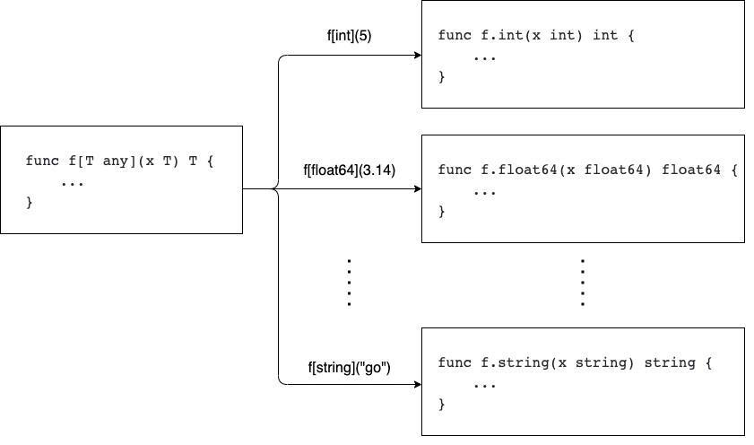
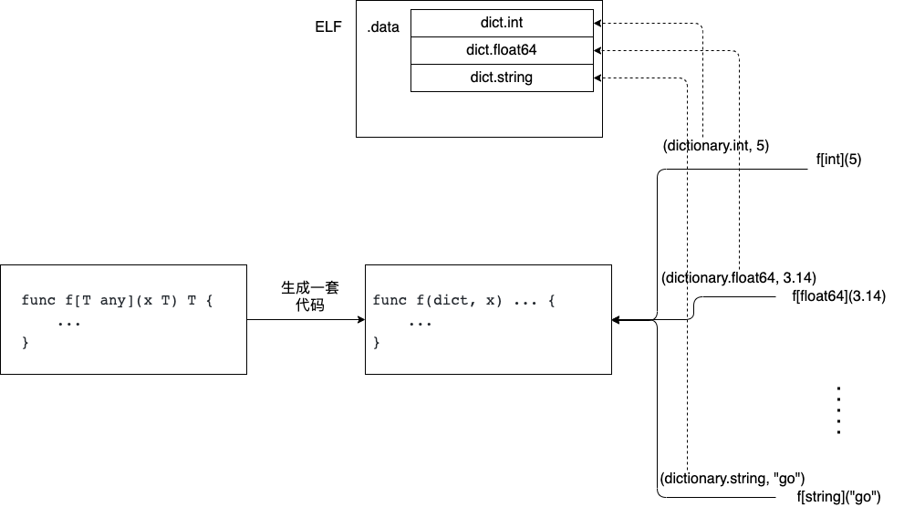
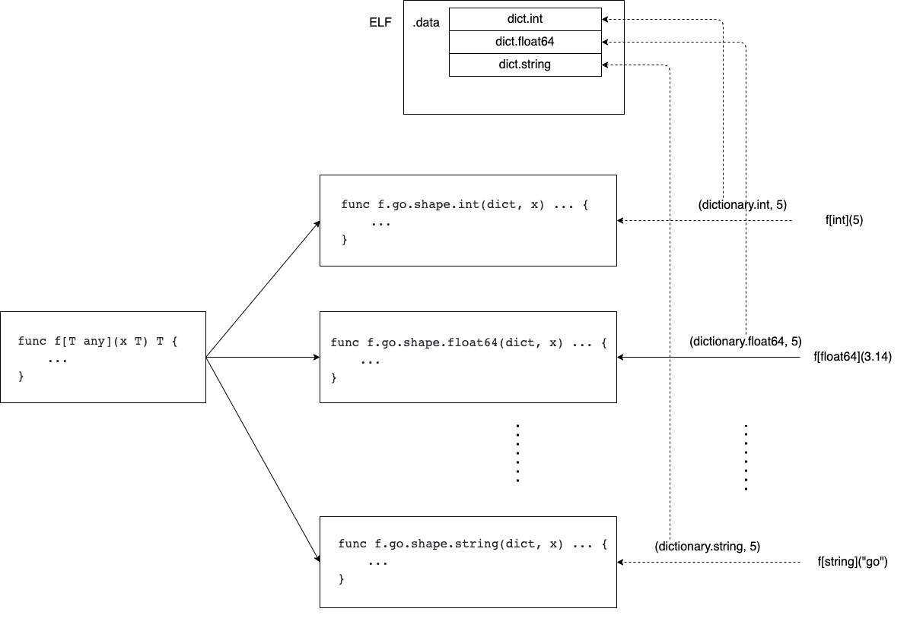
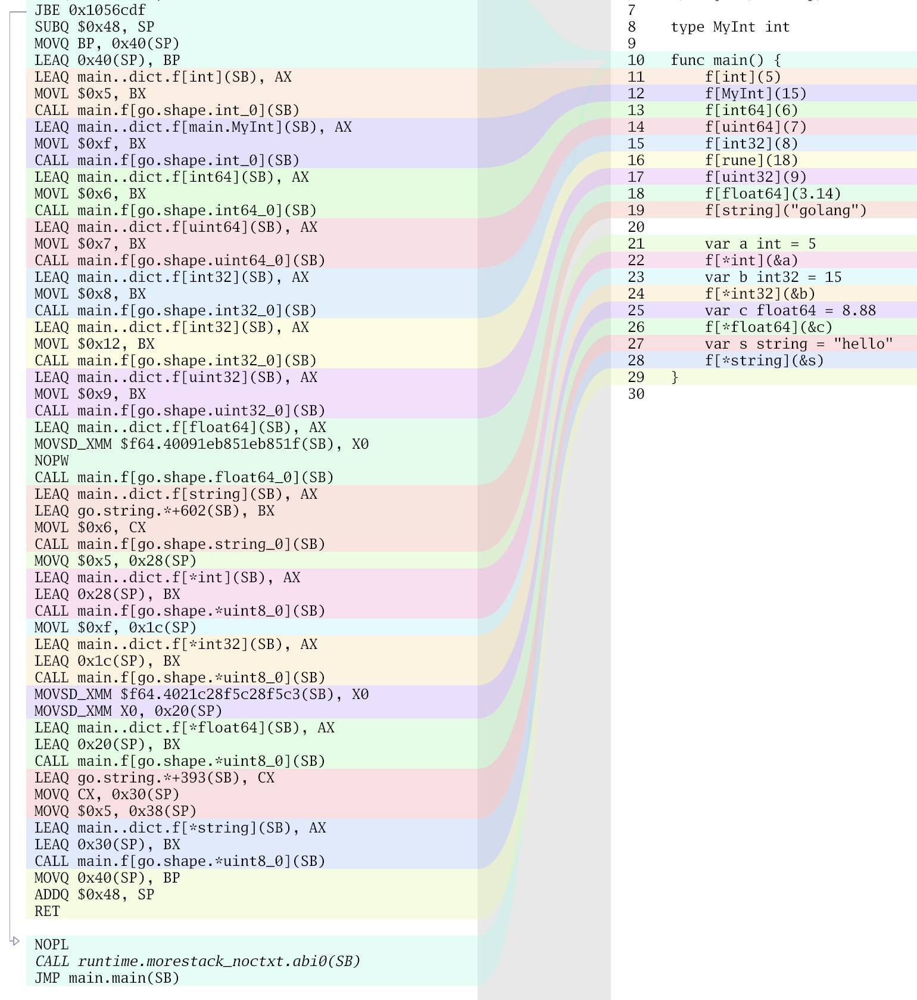

- 00 开篇词 这样入门Go，才能少走弯路.md
- 01 前世今生：你不得不了解的Go的历史和现状.md
- 02 拒绝“Hello and Bye”：Go语言的设计哲学是怎么一回事？.md
- 03 配好环境：选择一种最适合你的Go安装方法.md
- 04 初窥门径：一个Go程序的结构是怎样的？.md
- 05 标准先行：Go项目的布局标准是什么？.md
- 06 构建模式：Go是怎么解决包依赖管理问题的？.md
- 07 构建模式：Go Module的6类常规操作.md
- 08 入口函数与包初始化：搞清Go程序的执行次序.md
- 09 即学即练：构建一个Web服务就是这么简单.md
- 10 变量声明：静态语言有别于动态语言的重要特征.md
- 11 代码块与作用域：如何保证变量不会被遮蔽？.md
- 12 基本数据类型：Go原生支持的数值类型有哪些？.md
- 13 基本数据类型：为什么Go要原生支持字符串类型？.md
- 14 常量：Go在“常量”设计上的创新有哪些？.md
- 15 同构复合类型：从定长数组到变长切片.md
- 16 复合数据类型：原生map类型的实现机制是怎样的？.md
- 17 复合数据类型：用结构体建立对真实世界的抽象.md
- 18 控制结构：if的“快乐路径”原则.md
- 19 控制结构：Go的for循环，仅此一种.md
- 20 控制结构：Go中的switch语句有哪些变化？.md
- 21 函数：请叫我“一等公民”.md
- 22 函数：怎么结合多返回值进行错误处理？.md
- 23 函数：怎么让函数更简洁健壮？.md
- 24 方法：理解“方法”的本质.md
- 25 方法：方法集合与如何选择receiver类型？.md
- 26 方法：如何用类型嵌入模拟实现“继承”？.md
- 27 即学即练：跟踪函数调用链，理解代码更直观.md
- 28 接口：接口即契约.md
- 29 接口：为什么nil接口不等于nil？.md
- 30 接口：Go中最强大的魔法.md
- 31 并发：Go的并发方案实现方案是怎样的？.md
- 32 并发：聊聊Goroutine调度器的原理.md
- 33 并发：小channel中蕴含大智慧.md
- 34 并发：如何使用共享变量？.md
- 35 即学即练：如何实现一个轻量级线程池？.md
- 36 打稳根基：怎么实现一个TCP服务器？（上）.md
- 37 代码操练：怎么实现一个TCP服务器？（中）.md
- 38 成果优化：怎么实现一个TCP服务器？（下）.md
- 39 驯服泛型：了解类型参数.md
- 40 驯服泛型：定义泛型约束.md
- 41 驯服泛型：明确使用时机.md
- 元旦快乐 这是一份暂时停更的声明.md
- 加餐 作为Go Module的作者，你应该知道的几件事.md
- 加餐 如何拉取私有的Go Module？.md
- 加餐 我“私藏”的那些优质且权威的Go语言学习资料.md
- 加餐 聊聊Go 1.17版本的那些新特性.md
- 加餐 聊聊Go语言的指针.md
- 加餐 聊聊最近大热的Go泛型.md
- 大咖助阵 叶剑峰：Go语言中常用的那些代码优化点.md
- 大咖助阵 大明：Go泛型，泛了，但没有完全泛.md
- 大咖助阵 孔令飞：从小白到“老鸟”，我的Go语言进阶之路.md
- 大咖助阵 徐祥曦：从销售到分布式存储工程师，我与 Go 的故事.md
- 大咖助阵 曹春晖：聊聊 Go 语言的 GC 实现.md
- 大咖助阵 海纳：聊聊语言中的类型系统与泛型.md
- 期中测试 一起检验下你的学习成果吧.md
- 用户故事 罗杰：我的Go语言学习之路.md
- 结束语 和你一起迎接Go的黄金十年.md
- 结课测试 快来检验下你的学习成果吧！.md
41 驯服泛型：明确使用时机
你好，我是Tony Bai。
在前面关于Go泛型的两讲中，我们学习了Go泛型的基本语法类型参数，掌握了使用Go内置约束和自定义约束的方法，并对Go泛型新引入的类型集合概念做了全面说明。有了上面的知识铺垫后，我相信你已经具备了应用泛型语法编写泛型函数、定义泛型类型和方法的能力了。
不过，Go对泛型的支持，在提升了Go语言表达力的同时，也带来了不小的复杂性。也就是说，使用了泛型语法编写的代码在可读性、可理解性以及可维护性方面，相比于非泛型代码都有一定程度的下降。Go当初没有及时引入泛型的一个原因就是泛型与Go语言“简单”的设计哲学有悖，现在加入了泛型，Go核心团队以及Go社区却又开始担心“泛型被滥用”。
不过作为Go语言开发人员，我们每个人都有义务去正确、适当的使用泛型，而不是滥用或利用泛型炫技，因此在泛型篇的这最后一讲中，我就来说说什么时机适合使用泛型，供你参考。
何时适合使用泛型？
Go泛型语法体现在类型参数上，所以说，类型参数适合的场景就是适合应用泛型编程的时机。我们先来看看类型参数适合的第一种场景。
场景一：编写通用数据结构时
在Go尚不支持泛型的时候，如果要实现一个通用的数据结构，比如一个先入后出的stack数据结构，我们通常有两个方案。
第一种方案是为每种要使用的元素类型单独实现一套栈结构。如果我们要在栈里管理int型数据，我们就实现一个IntStack；如果要管理string类型数据，我们就再实现一个StringStack……总之，我们需要根据可能使用到的元素类型实现出多种专用的栈结构。
这种方案的优点是便于编译器的静态类型检查，保证类型安全，且运行性能很好，因为Go编译器可以对代码做出很好的优化。不过这种方案的缺点也很明显，那就是会有大量的重复代码。
第二种方案是使用interface{}实现通用数据结构。
在泛型之前，Go语言中唯一具有“通用”语义的语法就是interface{}了。无论Go标准库还是第三方实现的通用数据结构都是基于interface{}实现的，比如下面标准库中ring包中Ring结构就是使用interface{}作为元素类型的：
// $GOROOT/src/container/ring/ring.go
type Ring struct {
next, prev *Ring
Value interface{}
}
使用interface{}固然可以实现通用数据结构，但interface{}接口类型的固有特性也决定了这个方案也自带以下“先天不足”：
- Go编译器无法在编译阶段对进入数据结构中的元素的类型进行静态类型检查；
- 要想得到元素的真实类型，不可避免要进行类型断言或type switch操作；
- 不同类型数据赋值给interface{}或从interface{}还原时执行的装箱和拆箱操作带来的额外开销。
我们可以看到，以上两个方案都有各自的不足，那么有比较理想的方案么？
有的，那就是使用Go泛型。其实不止Go语言，其他支持泛型的主流编程语言的通用数据结构实现也都使用了泛型。下面是用Go泛型实现一个stack数据结构的示例代码：
// stack.go
package stack
type Stack[T any] []T
func (s *Stack[T]) Top() (t T) {
l := len(*s)
if l == 0 {
return t
}
return (*s)[l-1]
}
func (s *Stack[T]) Push(v T) {
(*s) = append((*s), v)
}
func (s *Stack[T]) Len() int {
return len(*s)
}
func (s *Stack[T]) Pop() (T, bool) {
var zero T
if len(*s) < 1 {
return zero, false
}
// Get the last element from the stack.
result := (*s)[len(*s)-1]
// Remove the last element from the stack.
*s = (*s)[:len(*s)-1]
return result, true
}
泛型版实现基本消除了前面两种方案的不足，如果非要说和IntStack、StringStack等的差异，那可能就是在执行性能上要差一些了：
$go test -bench .
goos: darwin
goarch: amd64
pkg: stack
BenchmarkStack-8 72775926 19.53 ns/op 40 B/op 0 allocs/op
BenchmarkIntStack-8 100000000 10.43 ns/op 45 B/op 0 allocs/op
PASS
当然，泛型版本性能略差与泛型的实现原理有关，这个我们后面再细说。
场景二：函数操作的是Go原生的容器类型时
如果函数具有切片、map或channel这些Go内置容器类型的参数，并且函数代码未对容器中的元素类型做任何特定假设，那我们使用类型参数可能很有帮助。
39讲中的maxGenerics那个例子就是这个情况，我们再回顾一下：
// max_generics.go
type ordered interface {
~int | ~int8 | ~int16 | ~int32 | ~int64 |
~uint | ~uint8 | ~uint16 | ~uint32 | ~uint64 | ~uintptr |
~float32 | ~float64 |
~string
}
func maxGenerics[T ordered](sl []T) T {
if len(sl) == 0 {
panic("slice is empty")
}
max := sl[0]
for _, v := range sl[1:] {
if v > max {
max = v
}
}
return max
}
我们看到，类型参数使得此类容器算法与容器内元素类型彻底解耦。在没有泛型语法之前，实现这样的函数通常需要使用反射。不过使用反射，会让代码可读性大幅下降，编译器也无法做静态类型检查，并且运行时开销也大得很。
场景三：不同类型实现一些方法的逻辑相同时
在Go编码过程中，我们经常会遇到这样一种情况，某个函数接受一个自定义接口类型作为参数，就像下面的doSomething函数以及其参数类型MyInterface接口：
type MyInterface interface {
M1()
M2()
M3()
}
func doSomething(i MyInterface) {
}
只有实现了MyInterface中全部三个方法的类型，才被允许作为实参传递给doSomething函数。当这些类型实现M1、M2和M3的逻辑看起来都相同时，我们就可以使用类型参数来帮助实现M1~M3这些方法了，下面就是通过类型参数实现这些方法的通用逻辑代码（实际逻辑做了省略处理）：
// common_method.go
type commonMethod[T any] struct{}
func (commonMethod[T]) M1() {}
func (commonMethod[T]) M2() {}
func (commonMethod[T]) M3() {}
func main() {
var intThings commonMethod[int]
var stringThings commonMethod[string]
doSomething(intThings)
doSomething(stringThings)
}
我们看到，使用不同类型，比如int、string等作为commonMethod的类型实参就可以得到相应实现了M1~M3的类型的变量，比如intThings、stringThings，这些变量可以直接作为实参传递给doSomething函数。
当然我们也可以再封装一个泛型函数来简化上述调用：
func doSomethingCM[T any]() {
doSomething(commonMethod[T]{})
}
func main() {
doSomethingCM[int]()
doSomethingCM[string]()
}
这里的doSomethingCM泛型函数将commonMethod泛型类型实例化与调用doSomething函数的过程封装到一起，使得commonMethod泛型类型的使用进一步简化了。
其实，Go标准库的sort.Sort就是这样的情况，其参数类型为sort.Interface，而sort.Interface接口中定义了三个方法：
// $GOROOT/src/sort/sort.go
func Sort(data Interface)
type Interface interface {
Len() int
Less(i, j int) bool
Swap(i, j int)
}
所有实现sort.Interface类型接口的类型，在实现Len、Less和Swap这三个通用方法的逻辑看起来都相同，比如sort.go中提供的StringSlice和IntSlice两种类型的三个方法的实现如下：
type StringSlice []string
func (x StringSlice) Len() int { return len(x) }
func (x StringSlice) Less(i, j int) bool { return x[i] < x[j] }
func (x StringSlice) Swap(i, j int) { x[i], x[j] = x[j], x[i] }
type IntSlice []int
func (x IntSlice) Len() int { return len(x) }
func (x IntSlice) Less(i, j int) bool { return x[i] < x[j] }
func (x IntSlice) Swap(i, j int) { x[i], x[j] = x[j], x[i] }
在这样的情况下，我们就可以通过类型参数来给出这三个方法的通用实现，这里我将其作为本讲的思考题留给你自己去实现。
不过要注意：如果多个类型实现上述方法的逻辑并不相同，那么我们就不应该使用类型参数。
好了，到这里最适合使用泛型的时机我都已经介绍了一遍。如果非要总结为一条，那就是：如果你发现自己多次编写完全相同的代码，其中副本之间的唯一区别是代码使用不同的类型，那么可考虑使用类型参数了。
假使你目前遇到的场景适合使用泛型，你可能依然会犹豫要不要使用泛型，因为你还不清楚泛型对代码执行性能的影响。特别是在一些性能敏感的系统中，这一点尤为重要。那么如何知道泛型对执行性能的影响呢？这就要从Go泛型实现原理说起了。
Go泛型实现原理简介
我在泛型加餐一文中曾提过：Go核心团队对泛型实现的探索开始得很早，在2009年12月，Go团队技术领导者Russ Cox就在其博客站点上发表一篇名为“泛型窘境”的文章。在这篇文章中，Russ Cox提出了Go面对泛型可遵循的三个路径以及每个路径的不足，也就是三个slow（拖慢）：
- C语言路径：不实现泛型，不会引入复杂性，但这会“拖慢程序员”，因为可能需要程序员花费精力做很多重复实现；
- C++语言路径：就像C++的泛型实现方案那样，通过增加编译器负担为每个类型实参生成一份单独的泛型函数的实现，这种方案产生了大量的代码，其中大部分是多余的，有时候还需要一个好的链接器来消除重复的拷贝，显然这个实现路径会“拖慢编译器”；
- Java路径：就像Java的泛型实现方案那样，通过隐式的装箱和拆箱操作消除类型差异，虽然节省了空间，但代码执行效率低，即“拖慢执行性能”。
如今Go加入了泛型，显然C语言的“拖慢程序员”这个路径被否决了，那么在剩下两个路径中，Go选择了哪条呢？下面我们就来真正看一下Go泛型的实现方案。
Go核心团队在评估Go泛型实现方案时是非常谨慎的，负责泛型实现设计的Keith Randall博士一口气提交了三个实现方案，供大家讨论和选择：
为了让你更好地理解泛型实现原理，我先来逐一对上述方案做个简单介绍。我们首先看一下Stenciling方案。
Stenciling方案
Stenciling方案也称为模板方案（如上图）， 它也是C++、Rust等语言使用的实现方案。其主要思路就是在编译阶段，根据泛型函数调用时类型实参或约束中的类型元素，为每个实参类型或类型元素中的类型生成一份单独实现。这么说还是很抽象，下图很形象地说明了这一过程：

我们看到，Go编译器为每个调用生成一个单独的函数副本（图中函数名称并非真实的，仅为便于说明而做的命名），相同类型实参的函数只生成一次，或通过链接器消除不同包的相同函数实现。
图示的这一过程在其他编程语言中也被称为“单态化（monomorphization）”。单态是相对于泛型函数的参数化多态（parametric polymorphism）而言的。
Randall博士也提到了这种方案的不足，那就是拖慢编译器。泛型函数需要针对不同类型进行单独编译并生成一份独立的代码。如果类型非常多，那么编译出来的最终文件可能会非常大。同时由于CPU缓存无法命中、指令分支预测等问题，可能导致生成的代码运行效率不高。
当然，对于性能不高这个说辞，我个人持保留态度，因为模板方案在其他编程语言中基本上是没有额外的运行时开销的，并且是应该是对编译器优化友好的。很多面向系统编程的语言都选择该方案，比如C++、D语言、Rust等。
Dictionaries方案
Dictionaries方案与Stenciling方案的实现思路正相反，它不会为每个类型实参单独创建一套代码，反之它仅会有一套函数逻辑，但这个函数会多出一个参数dict，这个参数会作为该函数的第一个参数，这和Go方法的receiver参数在方法调用时自动作为第一个参数有些类似。这个dict参数中保存泛型函数调用时的类型实参的类型相关信息。下面是Dictionaries方案的示意图：

包含类型信息的字典是Go编译器在编译期间生成的，并且被保存在ELF的只读数据区段（.data）中，传给函数的dict参数中包含了到特定字典的指针。从方案描述来看，每个dict中的类型信息还是十分复杂的，不过我们了解这些就够了，对dict的结构就不展开说明了。
这种方案也有自身的问题，比如字典递归的问题，如果调用某个泛型函数的类型实参有很多，那么dict信息也会过多等等。更重要的是它对性能可能有比较大的影响，比如通过dict的指针的间接类型信息和方法的访问导致运行时开销较大；再比如，如果泛型函数调用时的类型实参是int，那么如果使用Stenciling方案，我们可以通过寄存器复制即可实现x=y的操作，但在Dictionaries方案中，必须通过memmove了。
Go最终采用的方案：GC Shape Stenciling方案
GC Shape Stenciling方案顾名思义，它基于Stenciling方案，但又没有为所有类型实参生成单独的函数代码，而是以一个类型的GC shape为单元进行函数代码生成。一个类型的GC shape是指该类型在Go内存分配器/垃圾收集器中的表示，这个表示由类型的大小、所需的对齐方式以及类型中包含指针的部分所决定。
这样一来势必就有GC shape相同的类型共享一个实例化后的函数代码，那么泛型调用时又是如何区分这些类型的呢？
答案就是字典。该方案同样在每个实例化后的函数代码中自动增加了一个dict参数，用于区别GC shape相同的不同类型。可见，GC Shape Stenciling方案本质上是Stenciling方案和Dictionaries方案的混合版，它也是Go 1.18泛型最终采用的实现方案，为此Go团队还给出一个更细化、更接近于实现的GC Shape Stenciling实现方案。
下面是GC Shape Stenciling方案的示意图：

那么如今的Go版本（Go 1.19.x）究竟会为哪些类型实例化出一份独立的函数代码呢？我们通过下面示例来看一下：
// gcshape.go
func f[T any](t T) T {
var zero T
return zero
}
type MyInt int
func main() {
f[int](5)
f[MyInt](15)
f[int64](6)
f[uint64](7)
f[int32](8)
f[rune](18)
f[uint32](9)
f[float64](3.14)
f[string]("golang")
var a int = 5
f[*int](&a)
var b int32 = 15
f[*int32](&b)
var c float64 = 8.88
f[*float64](&c)
var s string = "hello"
f[*string](&s)
}
在这个示例中，我们声明了一个简单的泛型函数f，然后分别用不同的Go原生类型、自定义类型以及指针类型作为类型实参对f进行调用，我们通过工具为上述goshape.go生成的汇编代码如下：

从上图我们看到，Go编译器为每个底层类型相同的类型生成一份函数代码，像MyInt和int、rune和int32；对于所有指针类型，像上面的*float64、_int和_int32，仅生成一份名为main.f[go.shape.*uint8_0]的函数代码。
这与新版GC shape方案中的描述是一致的：“我们目前正在以一种相当精细的方式实现gc shapes。当且仅当两个具体类型具有相同的底层类型或者它们都是指针类型时，它们才会在同一个gcshape分组中”。
泛型对执行效率的影响
通过上面对Go泛型实现原理的了解，我们看到目前的Go泛型实现选择了一条折中的路线：既没有选择纯Stenciling方案，避免了对Go编译性能带去较大影响，也没有选择像Java那样泛型那样的纯装箱和拆箱方案，给运行时带去较大开销。
但GC Shape+Dictionaries的混合方案也确实会给泛型在运行时的执行效率带去影响，我们来看一个简单的实例：
// benchmark_simple/add.go
type plusable interface {
~int | ~string
}
func add[T plusable](a, b T) T {
return a + b
}
func addInt(a, b int) int {
return a + b
}
func addString(a, b string) string {
return a + b
}
这个示例用于对比泛型函数实例化后的函数代码（如add[int]）的性能与单态下的函数（如addInt）性能，下面是benchmark代码：
// benchmark_simple/add_test.go
func BenchmarkAddInt(b *testing.B) {
b.ReportAllocs()
var m, n int = 5, 6
for i := 0; i < b.N; i++ {
addInt(m, n)
}
}
func BenchmarkAddIntGeneric(b *testing.B) {
b.ReportAllocs()
var m, n int = 5, 6
for i := 0; i < b.N; i++ {
add(m, n)
}
}
运行这个benchmark：
$go test -bench .
goos: darwin
goarch: amd64
pkg: demo
BenchmarkAddInt-8 1000000000 0.2692 ns/op 0 B/op 0 allocs/op
BenchmarkAddIntGeneric-8 1000000000 1.074 ns/op 0 B/op 0 allocs/op
PASS
ok demo 1.491s
我们看到，与单态化的addInt相比，泛型函数add实例化后的add[int]的执行性能还是下降了很多。这个问题在Go官方issue中也有Gopher提出。
不过好消息是：在Go 1.20版本中，由于将使用Unified IR（中间代码表示）替换现有的IR表示，Go泛型函数的执行性能将得到进一步优化，上述的benchmark中两个函数的执行性能将不分伯仲，Go 1.19中也可使用GOEXPERIMENT=unified来开启Unified IR试验性功能。
我们在Unified IR开启的情况下再跑一次上面的benchmark：
$GOEXPERIMENT=unified go test -bench .
goos: darwin
goarch: amd64
pkg: demo
BenchmarkAddInt-8 1000000000 0.2713 ns/op 0 B/op 0 allocs/op
BenchmarkAddIntGeneric-8 1000000000 0.2723 ns/op 0 B/op 0 allocs/op
这次的对比结果就非常理想了！
综上，我建议你在一些性能敏感的系统中，还是要慎用尚未得到足够性能优化的泛型；而在性能不那么敏感的情况下，在符合前面泛型使用时机的时候，我们还是可以大胆使用泛型语法的。
小结
好了，今天的课讲到这里就结束了，现在我们一起来回顾一下吧。
在这一讲中，我们探讨了有关Go泛型的一个重要的问题：何时使用泛型。泛型语法的加入，不可避免地提升了Go语法的复杂性，为了防止Gopher滥用泛型，我们给出了几个Go泛型最适合应用的场景，包括：编写通用数据结构、编写操作Go原生容器类型时以及不同类型实现一些方法的逻辑看起来相同时。除此之外的其他场景下，如果你要使用泛型，务必慎重并深思熟虑。
Go泛型的编译性能和执行性能也是影响我们是否应用泛型的重要因素，Go核心团队在Go泛型实现方案的选择上也是煞费苦心，最终选择了GC shape stenciling的混合方案，目前这个方案很大程度避免了对Go编译性能的影响，但对Go泛型代码的执行效率依然存在不小影响。相信经过几个版本打磨和优化后，Go泛型的执行性能会有提升，甚至能接近于非泛型的单态版。
这里我还要提一下，Go泛型的实现方案也可能在未来版本中发生变化，从目前看，本讲中的内容仅针对Go 1.18和Go 1.19的GC Shape stenciling方案适用。
思考题
请你为Go标准库sort.Interface接口类型提供一个像文中示例common_method.go中那样的通用方法的泛型实现。
至此，泛型篇三讲就彻底讲完了。如果你有什么问题，欢迎在评论区留言。
© 2019 - 2023 Liangliang Lee. Powered by gin and hexo-theme-book.